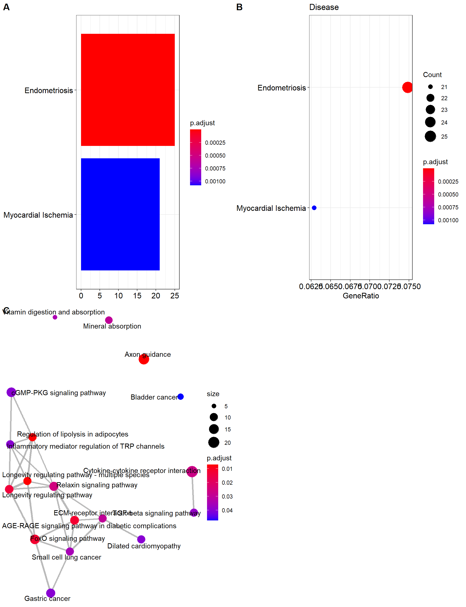

8 Gene expression-based enrichment analysis
This methodology can be extended to the analysis of multiple gene sets available in different databases such as GO or KEGG among others. Next sections illustrate how to perform such analyses using different BioC packages.
8.1 A primer on terminology, existing methods & statistical theory
Gene sets, pathways & regulatory networks
Gene sets are simple lists of usually functionally related genes without further specification of relationships between genes.
Pathways can be interpreted as specific gene sets, typically representing a group of genes that work together in a biological process. Pathways are commonly divided in metabolic and signaling pathways. Metabolic pathways such as glycolysis represent biochemical substrate conversions by specific enzymes. Signaling pathways such as the MAPK signaling pathway describe signal transduction cascades from receptor proteins to transcription factors, resulting in activation or inhibition of specific target genes.
Gene regulatory networks describe the interplay and effects of regulatory factors (such as transcription factors and microRNAs) on the expression of their target genes.
Resources
GO, KEGG and MSigDB annotations are most frequently used for the enrichment analysis of functional gene sets. Despite an increasing number of gene set and pathway databases, they are typically the first choice due to their long-standing curation and availability for a wide range of species.
GO: The Gene Ontology (GO) consists of three major sub-ontologies that classify gene products according to molecular function (MF), biological process (BP) and cellular component (CC). Each ontology consists of GO terms that define MFs, BPs or CCs to which specific genes are annotated. The terms are organized in a directed acyclic graph, where edges between the terms represent relationships of different types. They relate the terms according to a parent-child scheme, i.e. parent terms denote more general entities, whereas child terms represent more specific entities.
KEGG: The Kyoto Encyclopedia of Genes and Genomes (KEGG) is a collection of manually drawn pathway maps representing molecular interaction and reaction networks. These pathways cover a wide range of biochemical processes that can be divided in 7 broad categories: metabolism, genetic and environmental information processing, cellular processes, organismal systems, human diseases, and drug development. Metabolism and drug development pathways differ from pathways of the other 5 categories by illustrating reactions between chemical compounds. Pathways of the other 5 categories illustrate molecular interactions between genes and gene products.
MSigDB: Molecular Signatures Database (MSigDB) are divided into 8 major collections, and several sub-collections. These include:
H: hallmark gene sets: Hallmark gene sets summarize and represent specific well-defined biological states or processes and display coherent expression.
C1: positional gene sets: Gene sets corresponding to each human chromosome and each cytogenetic band that has at least one gene.
C2: curated gene sets: Gene sets curated from various sources such as online pathway databases, the biomedical literature, and knowledge of domain experts. It contains 5 sub-collections.
C3 motif gene sets: Gene sets representing potential targets of regulation by transcription factors or microRNAs. It has 2 sub-collections.
C4 computational gene sets: Computational gene sets defined by mining large collections of cancer-oriented microarray data. It has 4 sub-collections.
C5 GO gene sets: Gene sets that contain genes annotated by the same GO term. The C5 collection is divided into three sub-collections based on GO ontologies: BP, CC, and MF.
C6 oncogenic signatures: Gene sets that represent signatures of cellular pathways which are often dis-regulated in cancer.
C7 inmunologic signatures: Gene sets that represent cell states and perturbations within the immune system.
Statistical approaches
The two predominantly used enrichment methods are:
- Overrepresentation analysis (ORA), testing whether a gene set contains disproportional many genes of significant expression change, based on the procedure outlined in the first section.
- Gene set enrichment analysis (GSEA), testing whether genes of a gene set accumulate at the top or bottom of the full gene vector ordered by direction and magnitude of expression change Subramanian et al., 2005. However, the term gene set enrichment analysis nowadays subsumes a general strategy implemented by a wide range of methods Huang et al., 2009. Those methods have in common the same goal, although approach and statistical model can vary substantially Goeman and Buehlmann, 2007, Khatri et al., 2012.
To better distinguish from the specific method, some authors use the term gene set analysis to denote the general strategy. However, there is also a specific method from Efron and Tibshirani, 2007 of this name.
Goeman and Buehlmann further raise several critical issues concerning the 2x2 ORA:
- rather arbitrary classification of genes in DE / not DE
- based on gene sampling, although sampling of subjects is appropriate
- unrealistic independence assumption between genes, resulting in highly anti-conservative p-values
With regard to these statistical concerns, GSEA is considered superior:
- takes all measured genes into account
- subject sampling via permutation of class labels
- the incorporated permutation procedure implicitly accounts for correlations between genes
However, the simplicity and general applicability of ORA is unmet by subsequent methods improving on these issues. For instance, GSEA requires the expression data as input, which is not available for gene lists derived from other experiment types. On the other hand, the involved sample permutation procedure has been proven inaccurate and time-consuming Efron and Tibshirani, 2007, Phipson and Smyth, 2010, Larson and Owen, 2015.
Khatri et al., 2012 have taken a slightly different approach by classifying methods along the timeline of development into three generations:
- Generation: ORA methods based on the 2x2 contingency table test,
- Generation: functional class scoring (FCS) methods such as GSEA, which compute gene set (= functional class) scores by summarizing per-gene DE statistics,
- Generation: topology-based methods, explicitly taking into account interactions between genes as defined in signaling pathways and gene regulatory networks (Geistlinger et al., 2011 for an example).
Although topology-based (also: network-based) methods appear to be most realistic, their straightforward application can be impaired by features that are not-detectable on the transcriptional level (such as protein-protein interactions) and insufficient network knowledge Geistlinger et al., 2013, Bayerlova et al., 2015.
Given the individual benefits and limitations of existing methods, cautious interpretation of results is required to derive valid conclusions. Whereas no single method is best suited for all application scenarios, applying multiple methods can be beneficial. This has been shown to filter out spurious hits of individual methods, thereby reducing the outcome to gene sets accumulating evidence from different methods Geistlinger et al., 2016, Alhamdoosh et al., 2017.
8.2 Basic analysis using GOstats
Let us illustrate how to perform ORA (enrichment analysis) using gene expression data. First, we need to perform DE analysis. Our interest is to compare gene expression between cell lines that have been treated with dexamethasone or not.
class: RangedSummarizedExperiment
dim: 64102 8
metadata(1): ''
assays(1): counts
rownames(64102): ENSG00000000003 ENSG00000000005 ... LRG_98 LRG_99
rowData names(0):
colnames(8): SRR1039508 SRR1039509 ... SRR1039520 SRR1039521
colData names(9): SampleName cell ... Sample BioSample
trt untrt
4 4 Then, let us analyzed the RNA-seq count data using DESeq2 that uses generalized linear models (negative binomial) (voom, edgeR or any other method could be used instead). NOTES: 1) we avoid normalization step which is normally required (DESeq2 incorporates this step in its pipeline); 2) we also avoid to investigate whether unwanted variability should be removed; 3) Our aim is to get a list of DE genes that may have ‘some sense’
library(DESeq2)
dds <- DESeqDataSetFromMatrix(countData = assay(airway, "counts"),
colData = colData(airway),
design = as.formula( ~ dex))
dds <- dds[ rowSums(counts(dds)) > 5, ]
dds <- DESeq(dds)
res <- results(dds, contrast = c("dex", 'trt', 'untrt'))
res <- res[order(res$pvalue), ]
reslog2 fold change (MLE): dex trt vs untrt
Wald test p-value: dex trt vs untrt
DataFrame with 24345 rows and 6 columns
baseMean log2FoldChange lfcSE stat pvalue padj
<numeric> <numeric> <numeric> <numeric> <numeric> <numeric>
ENSG00000152583 997.440 4.60253 0.2117509 21.7356 9.46071e-105 1.71787e-100
ENSG00000148175 11193.719 1.45147 0.0852982 17.0164 6.20890e-65 5.63706e-61
ENSG00000179094 776.597 3.18386 0.2015137 15.7997 3.12585e-56 1.89197e-52
ENSG00000134686 2737.982 1.38715 0.0920523 15.0691 2.58489e-51 1.17341e-47
ENSG00000125148 3656.253 2.20344 0.1475941 14.9290 2.13337e-50 7.74754e-47
... ... ... ... ... ... ...
ENSG00000258486 330.4721 -0.1421492 0.943248 -0.1507019 NA NA
ENSG00000260910 26.1850 1.6795123 0.821286 2.0449778 NA NA
ENSG00000261239 10.2232 -0.2123196 2.486879 -0.0853759 NA NA
ENSG00000262902 439.5753 0.2233259 1.970163 0.1133540 NA NA
ENSG00000265735 143.3031 -0.0906931 1.001134 -0.0905904 NA NAWe call DE genes with a minimum 1.2-fold change of expression at a maximum FDR of 1%:
mask <- res$padj < 0.01 & !is.na(res$padj) &
abs(res$log2FoldChange) > log2(2)
deGenes <- rownames(res[mask, ])
head(deGenes)[1] "ENSG00000152583" "ENSG00000148175" "ENSG00000179094" "ENSG00000134686" "ENSG00000125148" "ENSG00000120129"[1] 676The gene universe is obtained by (number of calculated tests):
[1] 24294[1] 24345In order to asses functional enrichment, both DE gene list and gene universe must be annotated in Entrez IDs:
library(org.Hs.eg.db)
deGenes <- unlist(mget(deGenes, envir=org.Hs.egENSEMBL2EG,
ifnotfound = NA))
geneUniverse <- unlist(mget(geneUniverse, envir=org.Hs.egENSEMBL2EG,
ifnotfound = NA))Now, the enrichment analysis for GO is performed by
library(GOstats)
params <- new("GOHyperGParams", geneIds=deGenes,
universeGeneIds=geneUniverse,
annotation="org.Hs.eg.db", ontology="BP",
pvalueCutoff=0.05, conditional=FALSE,
testDirection="over")
hgOver <- hyperGTest(params)
hgOverGene to GO BP test for over-representation
6327 GO BP ids tested (1513 have p < 0.05)
Selected gene set size: 547
Gene universe size: 13655
Annotation package: org.Hs.eg The table can be generated by
GOBPID Pvalue OddsRatio ExpCount Count Size Term
1 GO:0050896 4.004729e-13 1.901455 271.99780 354 6790 response to stimulus
2 GO:0009653 1.305943e-12 2.080880 87.36778 151 2181 anatomical structure morphogenesis
3 GO:0051239 1.464489e-12 2.020228 100.50699 167 2509 regulation of multicellular organismal process
4 GO:0051094 1.936645e-12 2.459144 44.62527 94 1114 positive regulation of developmental process
5 GO:0048646 1.671464e-11 2.542808 35.85244 79 895 anatomical structure formation involved in morphogenesis
6 GO:0050793 2.019617e-11 2.017808 84.76397 144 2116 regulation of developmental processWe can alos explore the results by generating an html report:
The KEGG enrichment is performed by:
library(KEGG.db)
params.kegg <- new("KEGGHyperGParams", geneIds=deGenes,
universeGeneIds=geneUniverse,
annotation="org.Hs.eg.db",
pvalueCutoff=0.05,
testDirection="over")
hgOver.kegg <- hyperGTest(params.kegg)
head(summary(hgOver.kegg)) KEGGID Pvalue OddsRatio ExpCount Count Size Term
1 04060 0.0009526255 2.519903 8.0269137 18 161 Cytokine-cytokine receptor interaction
2 04977 0.0014798039 7.473025 0.8974189 5 18 Vitamin digestion and absorption
3 00750 0.0021867795 19.300448 0.2991396 3 6 Vitamin B6 metabolism
4 05414 0.0030336333 3.118754 3.6395323 10 73 Dilated cardiomyopathy
5 04512 0.0044995301 2.929795 3.8389587 10 77 ECM-receptor interaction
6 04350 0.0049414310 2.886029 3.8888154 10 78 TGF-beta signaling pathway8.3 Analysis using clusterProfiler
clusterProfiler performs statistical analysis and visualization of functional profiles for genes and gene clusters. It includes GO, KEEG and a general function to perform ORA for any database such as MSigDB or DisGeNET among others.
library(clusterProfiler)
ans.go <- enrichGO(gene = deGenes, ont = "BP",
OrgDb ="org.Hs.eg.db",
readable=TRUE,
pvalueCutoff = 0.05)
tab.go <- as.data.frame(ans.go)
tab.go<- subset(tab.go, Count>5)
tab.go[1:5, 1:6] ID Description GeneRatio BgRatio pvalue p.adjust
GO:0007411 GO:0007411 axon guidance 26/547 276/18670 1.776070e-07 0.0004337162
GO:0097485 GO:0097485 neuron projection guidance 26/547 277/18670 1.907283e-07 0.0004337162
GO:0030198 GO:0030198 extracellular matrix organization 30/547 368/18670 4.818478e-07 0.0005802757
GO:0043062 GO:0043062 extracellular structure organization 30/547 369/18670 5.103568e-07 0.0005802757
GO:0045444 GO:0045444 fat cell differentiation 22/547 223/18670 7.186823e-07 0.0006537134ans.kegg <- enrichKEGG(gene = deGenes,
organism = 'hsa',
pvalueCutoff = 0.05)
tab.kegg <- as.data.frame(ans.kegg)
tab.kegg<- subset(tab.kegg, Count>5)
tab.kegg[1:5, 1:6] ID Description GeneRatio BgRatio pvalue p.adjust
hsa04923 hsa04923 Regulation of lipolysis in adipocytes 10/286 57/8087 2.587664e-05 0.007074392
hsa04213 hsa04213 Longevity regulating pathway - multiple species 10/286 62/8087 5.510596e-05 0.007074392
hsa04360 hsa04360 Axon guidance 18/286 182/8087 7.318336e-05 0.007074392
hsa04933 hsa04933 AGE-RAGE signaling pathway in diabetic complications 12/286 100/8087 1.975759e-04 0.011981969
hsa04068 hsa04068 FoxO signaling pathway 14/286 131/8087 2.065857e-04 0.011981969For external databases such as DisGeNET or MSigDB collections, databases must be imported into R. This is how DisGeNET is imported into R
gda <- read.delim("data/curated_gene_disease_associations.tsv.gz")
disease2gene <- gda[, c("diseaseId", "geneId")]
disease2name <- gda[, c("diseaseId", "diseaseName")]Then, the enrichment is perform using enricher function:
ans.dis <- enricher(deGenes, TERM2GENE=disease2gene,
TERM2NAME=disease2name)
tab.dis <- as.data.frame(ans.dis)
tab.dis<- subset(tab.dis, Count>5)
tab.dis[,1:6] ID Description GeneRatio BgRatio pvalue p.adjust
C0014175 C0014175 Endometriosis 25/334 156/8948 5.455196e-10 8.319175e-07
C0151744 C0151744 Myocardial Ischemia 21/334 171/8948 1.415760e-06 1.079517e-03This is the R code for transcription factors which is one of the sub-collection of C3 available at MSigDb for additional gene set collections.
c3.tf <- read.gmt("c:/Juan/CREAL/HELIX/pathways/GSEA/c3.tft.v6.2.entrez.gmt")
ans.tf <- enricher(deGenes, TERM2GENE=c3.tf)
tab.tf <- as.data.frame(ans.tf)
tab.tf<- subset(tab.tf, Count>5)
tab.tf[1:5,1:5] ID Description GeneRatio BgRatio pvalue
HNF3_Q6 HNF3_Q6 HNF3_Q6 20/459 189/12774 1.520418e-05
SRF_Q6 SRF_Q6 SRF_Q6 23/459 241/12774 1.947737e-05
CEBPB_02 CEBPB_02 CEBPB_02 24/459 258/12774 1.972855e-05
CEBP_Q2 CEBP_Q2 CEBP_Q2 22/459 234/12774 3.707975e-05
OCT1_05 OCT1_05 OCT1_05 23/459 254/12774 4.481583e-058.4 Visualization
All analyses performed with clusterProfiler can be visualize by different plots:

p2 <- dotplot(ans.kegg, showCategory=20) + ggtitle("KEGG")
p3 <- dotplot(ans.dis, showCategory=20) + ggtitle("Disease")
plot_grid(p2, p3, nrow=2)



8.5 Genomic region enrichment analysis
Microarrays and next-generation sequencing are also widely applied for large-scale detection of variable and regulatory genomic regions, e.g. single nucleotide polymorphisms, copy number variations, and transcription factor binding sites. Such experimentally-derived genomic region sets are raising similar questions regarding functional enrichment as in gene expression data analysis. Of particular interest is thereby whether experimentally-derived regions overlap more (enrichment) or less (depletion) than expected by chance with regions representing known functional features such as genes or promoters.
The regioneR package implements a general framework for testing
overlaps of genomic regions based on permutation sampling.
This allows to repeatedly sample random regions from the genome, matching size
and chromosomal distribution of the region set under study.
By recomputing the overlap with the functional features in each permutation,
statistical significance of the observed overlap can be assessed. To demonstrate the basic functionality of the package, we consider the analysis of copy number variants (CNV).
Let us assume, we want to assess the overlap between the significant CNV regions obtained after comparing normal vs tumor samples from TCGA and protein-coding regions. We now recall the results we obtained in the association analysis
GRanges object with 7362 ranges and 3 metadata columns:
seqnames ranges strand | counts pvalue BH
<Rle> <IRanges> <Rle> | <matrix> <numeric> <numeric>
[1] chr1 149898951-150333087 * | 1:30 9.17197e-07 6.85697e-06
[2] chr1 150335347-151170789 * | 0:30 4.02901e-08 3.69843e-07
[3] chr1 154984468-155005476 * | 0:21 6.60494e-06 4.05859e-05
[4] chr1 155006954-155050185 * | 0:22 3.64040e-06 2.34224e-05
[5] chr11 60943071-61361689 * | 0:16 1.38665e-04 6.54493e-04
... ... ... ... . ... ... ...
[7358] chr11 69559601-69650887 * | 0:66 2.94814e-17 9.70149e-16
[7359] chr11 70695866-71002410 * | 1:53 1.24305e-12 2.43117e-11
[7360] chr11 73552530-73878688 * | 0:22 3.64040e-06 2.34224e-05
[7361] chr11 74853813-74901601 * | 0:21 6.60494e-06 4.05859e-05
[7362] chr16 653459-2025678 * | 1:16 1.01825e-03 3.99168e-03
-------
seqinfo: 23 sequences from an unspecified genome; no seqlengthsTo obtain the location of protein-coding genes, we query available Human annotation from Ensembl
library(AnnotationHub)
ah <- AnnotationHub()
ahDb <- query(ah, pattern = c("Homo sapiens", "EnsDb"))
ahDband retrieve gene coordinates in the UMD3.1 assembly (Ensembl 92).
We then need to verify that the seqlevels annotation of both GenomicRanges are the same:
factor-Rle of length 65256 with 423 runs
Lengths: 5349 2236 ... 518
Values : chr1 chr10 ... chrY
Levels(423): chr1 chr10 chr11 chr12 chr13 chr14 chr15 ... chrLRG_721 chrLRG_741 chrLRG_763 chrLRG_93 chrMT chrX chrYfactor-Rle of length 7362 with 1548 runs
Lengths: 4 9 3 11 1 45 1 1 16 ... 1 1 9 21 1 2 8 1
Values : chr1 chr11 chr12 chr20 chr11 chr17 chr20 chr5 chr8 ... chr8 chr16 chr8 chr11 chr17 chr10 chr11 chr16
Levels(23): chr1 chr2 chr3 chr10 chr14 chr4 chr11 chr12 chr20 ... chr15 chr17 chrX chr8 chr16 chr19 chr13 chr22 chr18otherwise we need to re-assign the seqlevels
Let us run the enrichment in chromosome 1:
sel.protein <- hg.genes[seqnames(hg.genes)%in%c("chr1")]
sel.protein <- sel.protein[sel.protein$gene_biotype ==
"protein_coding"]
sel.cnvs <- brca.gr.sig[seqnames(brca.gr.sig)%in%c("chr1")]
length(sel.cnvs)[1] 234We then apply an overlap permutation test with 100 permutations (ntimes=100), while maintaining chromosomal distribution of the CNV region set (per.chromosome=TRUE). Setting the option count.once=TRUE counts an overlapping CNV region only once. To randomly sample regions from the entire genome no masking is required (mask=NA) and to draw robust conclusions a minimum of 1000 permutations should be performed
library(regioneR)
library(BSgenome.Hsapiens.UCSC.hg19.masked)
res.prot <- overlapPermTest(A=sel.cnvs, B=sel.protein,
mask=NA, genome="hg19",
ntimes=100,
per.chromosome=TRUE,
count.once=TRUE)
res.prot$numOverlaps
P-value: 0.0099009900990099
Z-score: 8.1252
Number of iterations: 100
Alternative: greater
Evaluation of the original region set: 220
Evaluation function: numOverlaps
Randomization function: randomizeRegions
attr(,"class")
[1] "permTestResultsList"The permutation \(P\)-value indicates a statistically significant overlaps of CNVs with protein coding regions. From 234 CNVs, 220 overlap with at least one protein coding gene. We can also repeat the analysis for promoters from UCSC defined as -2000 to +200 base pairs to the TSS according to the genome assembly hg19. Analyzing chromosome 1
file.prom <- "http://gattaca.imppc.org/regioner/data/UCSC.promoters.hg19.bed"
promoters <- toGRanges(file.prom)
sel.prom <- promoters[seqnames(promoters) %in% c("chr1")]we obtain
res.prom <- overlapPermTest(sel.cnvs, sel.prom,
ntimes=100, genome="hg19",
count.once=TRUE)
res.prom$numOverlaps
P-value: 0.0099009900990099
Z-score: 43.6248
Number of iterations: 100
Alternative: greater
Evaluation of the original region set: 184
Evaluation function: numOverlaps
Randomization function: randomizeRegions
attr(,"class")
[1] "permTestResultsList"We also observe significant overlap of CNVs in regions with promoters. Notice that the function permTest allows user-defined functions for randomizing control and for evaluating additional genomic measures.
Note #1: The function regioneR::permTest allows to incorporate user-defined
functions for randomizing regions and evaluating additional measures of overlap
such as total genomic size in bp.
Note #2: The LOLA package implements a genomic region ORA, which assesses genomic region overlap based on the hypergeometric distribution using a library of pre-defined functional region sets.